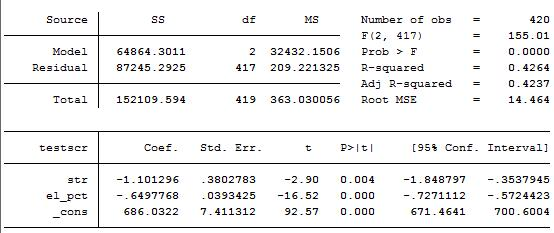
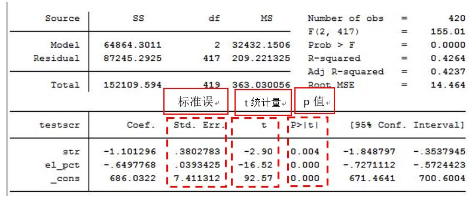
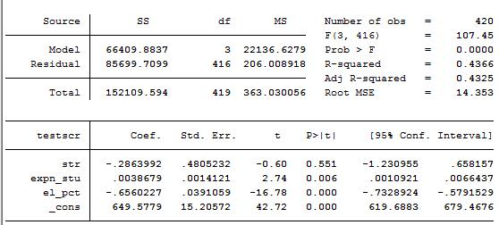
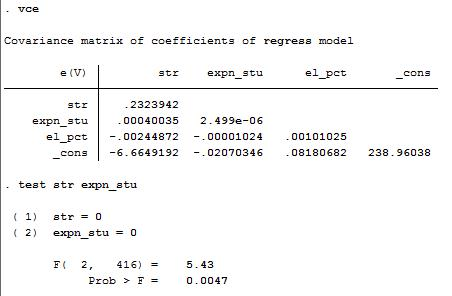
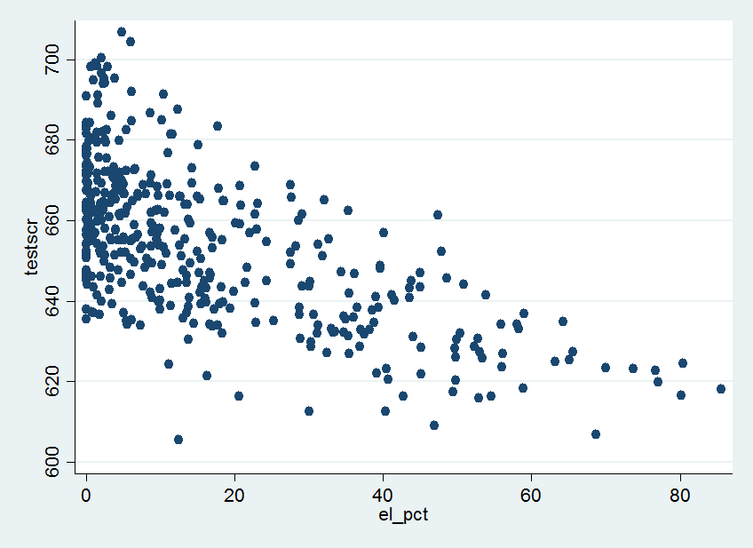
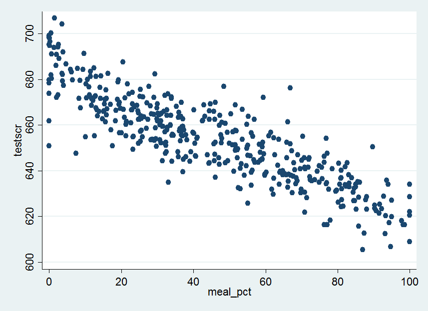
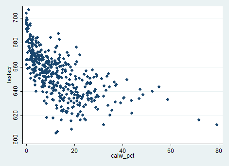
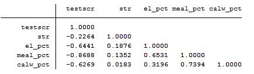
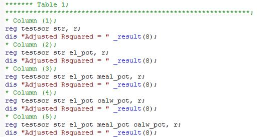

多元线性回归
第三讲的回归结果显示：学生老师比越小，平均分数越高。但是，肯定有人怀疑这一结论，因为小班的学生可能还有其他的因素使得其平均分数更高。
在第三讲中，这些被遗漏的因素全部“丢进”了误差项\(u_i\)中。但是这会使得OLS估计量产生偏误，我们在下面的内容中将详细阐述。那么，怎么解决“遗漏变量偏误”呢？多元回归就是消除遗漏变量偏误的一种方法。
多元回归的idea很直观：如果那些遗漏变量的数据可用，那么，我们就能将这些变量纳入回归方程中作为回归因子，并且在保持其它变量不变的情况下，估计出一个回归因子的效应。
遗漏变量偏误
第三讲用小班教学作为例子。在这个例子中，班级规模（学生- 老师比）越小，平均成绩越高。但是，仅仅考虑学生-老师比这一个因素不够，还忽略了许多重要的潜在决定因素对测试成绩的影响。这些潜在影响因素包括：学校特征（教师质量、硬件设备等等）、学生特征（家庭背景、语言差异等等）。下面，我们以语言差异为例。
大家都知道，中国方言甚多，甚至同一个城市里不同区域的方言也不相同。在湖北省高考语文试题中，经常考字的读音。湖北人普通话不标准，因为前鼻音“l” 和后鼻音“n”不分，平舌“si”和翘舌“shi"不分。还有很多的地方的人“飞”和“灰”不分。因此，估计很多学生都怕读音题，尤其是是南方人。
那么，如果一个班里南方人比例多，而另一个班级里北方人比例高，如果考读音题，估计南方人多的班级平均分会低于北方人多的班级。如果我们忽略这种语言差异，仅仅用学生-老师比来回归，预期班级规模对测试成绩的效应会有偏。因为南方学生在读音题上的得分可能低于北方学生。如果大班中有许多南方人，那么，学生-老师比的OLS回归系数可能会高估对测试分数的效应。
遗漏变量偏误的定义
如果一个回归元与模型中遗漏的变量有关，且这个遗漏变量还是因变量的决定因素，那么，OLS 估计量会产生遗漏变量偏误。
遗漏变量偏误产生必须同时满足两个条件：
1、X与遗漏变量相关；
2、遗漏变量是因变量Y的一个决定因素。
遗漏变量偏误与第一个LS假设。回顾一下第三讲中有关OLS的三个假设，其中，第一个是\(E(u_i|X_i)=0\)。遗漏变量偏误就意味着这个假设不成立。
在一元回归中，\(u_i\)包含除了\(X_i\)以外所有决定Y的因素。如果这些遗漏的因素中有一个与\(X_i\)，那么，误差项\(u_i\)就与\(X_i\)相关。因此，\(E(u_i|X_i)\neq0\)。这个假设不成立，后果很严重：OLS估计量有偏。即使在大样本下，偏误也不会消除，而且OLS估计量不是一致估计量。
因为，遗漏变量与\(X_i\)相关，我们定义\(corr(X_i,u_i)=\rho_{Xu}\)。 假设LS 的第二和第三个假设仍然成立。那么，OLS估计量就有下列极限： \[\begin{equation} \hat{\beta}_1\xrightarrow{p}\beta{_1}+\rho_{Xu}\frac{\sigma{_u}}{\sigma{_X}} \end{equation}\]
也就是说，随着样本规模的增大，\(\hat{\beta}_1\)以越来越高的概率趋近于\(\ beta{_1}+\rho_{Xu}\frac{\sigma{_u}}{\sigma{_X}}\)。
note：
1、无论样本规模大小，遗漏变量偏误问题都要引起注意。从公式（1）中可以看出，\(\hat{\beta}_1\)并不收敛到真值\(\beta_1\)。且偏误的大小为\(\rho_{Xu}\frac{\sigma{_u}}{\sigma{_X}}\)。
2、偏误的大小取决于误差项与X 的相关系数\(\rho_{Xu}\)。\(|\rho_{Xu}|\)越大，偏误越大。
3、偏误的方向（也就是，系数高估还是低估）取决于误差项与X是正相关还是负相关。如果\(\rho_{Xu}<0\)，OLS估计量就是低估，反之亦然。
例子：听莫扎特可以提高智力？！
在孩子教育问题方面，流传着这样的一个故事：让孩子每天听听莫扎特的音乐，可以提高孩子的智力。其实，这是Rauscher et al.（1993）在Nature上发表的研究成果。他们建议，听10-15 分钟的莫扎特会暂时性提高IQ8-9个点。
真的存在“莫扎特效应”吗？如果存在，提高8-9点IQ是高还是低了？现在我们学了一点计量了，我们用计量经济学的语言，这个效应估计可能存在遗漏变量偏误。
多元回归模型
既然遗漏变量偏误是由于某些决定Y，而又与X相关的变量没有包含在回归方程中，那么，只要这些变量数据可用，我们只要把它们纳入回归方程中就可以消除遗漏变量偏误。这就是多元回归模型。多元回归模型可以在保持\(X_2\)不变的情况下，估计出\(X_1\)对Y的效应。
总体回归线
假设只有两个自变量\(X_{1i}\)和\(X_{2i}\)。在线性多元回归模型中，自变量和因变量之间的关系由下式给出 \[\begin{equation} E(Y_i|X_{1i}=x_1,X_{2i}=x_2)=\beta_0+\beta_1x_1+\beta_2x_2 \end{equation}\]
公式（2）称为总体回归线，或者总体回归函数。多元回归模型中一个或多个自变量有时候也称为控制变量。公式（2）中的系数\(\beta_1\)含义与一元回归中有些不同。在多元回归中，这个系数是保持X2为常数或者控制X2 时，X1的单位变化引起Y的变化。这个系数也称为局部效应。
总体回归方程
正如一元回归，多元回归线也不能精确表示自变量与Y之间的关系，因为还有许多影响Y的因素并没有包含在多元回归线中。因此，公式（2）也需要包含误差项来代表其它因素。即 \[\begin{equation} Y_i=\beta_0+\beta_1X_1+\beta_2X_2+u_i,~~i=1,\cdots,n \end{equation}\]
我们可以把\(\beta_0\)理解成是值为1的自变量的系数。因为该自变量的值恒为1，因此称为常自变量。类似，\(\beta_0\)也被称为常数项。
在实践中，多元回归模型通常包含两个以上的自变量，形式如下 \[\begin{equation} Y_i=\beta_0+\beta_1X_1+\beta_2X_2+\cdots+\beta_kX_k+u_i,~~i=1,\cdots,n \end{equation}\]
多元回归中的OLS估计量
回忆一下，一元回归的OLS估计量：选择系数来最小化预测误差平方和，即选择\(\hat{\beta}_0,\hat{\beta}_1\) 来最小化\(\sum_{i=1}^{n}{(Y_i-\hat{\beta}_0-\hat{\beta}_1X_i)^2}\)。\(\hat{\beta}_0,\hat{\beta}_1\) 就是OLS估计量。
这一思想也可以沿用至多元回归的系数估计。即 \[\begin{equation} \sum_{i=1}^{n}{(Y_i-\hat{\beta}_0-\hat{\beta}_1X_i-\cdots-\hat{\beta}_kX_k)^2} \end{equation}\]
其中，\(\hat{\beta}_0,\hat{\beta}_1,\cdots,\hat{\beta}_k\) 是OLS估计量。而OLS残差用\(\hat{u}_i=Y_i-\hat{Y}_i\)表示。
上面的OLS估计量公式有点麻烦。但是，幸运地是这些计算公式都已经编写进了统计软件中，例如Stata，我们把数据输入后，软件就可以直接给出结果。
应用
第三讲中，学生-老师比对测试成绩的效应，用的美帝加利福利亚州420个观测样本估计的回归模型为 \[\begin{equation} \hat{Y}=698.9-2.28\times{X} \end{equation}\]
但是，通过上面内容的讲解，我们担心这个回归模型对小班教学效应的估计不准确。因为它存在遗漏变量偏误问题。因为美帝是一个移民国家，学校里有许多学生母语是非英语，因此，其在测试分数上表现稍微差一些。我们正好也有加利福利亚州学生母语为非英语人数的数据。那么，我们就可以在上述一元回归模型中引入非母语学生变量，从而消除遗漏变量偏误问题。得到的多元回归方程为 \[\begin{equation} \hat{Y}=686.0-1.10\times{X_1}-0.65\times{X_2} \end{equation}\]
其中，\(X_1\)表示学生-老师比（str），\(X_2\)表示非英语母语学生（elpct）。
stata结果为

将一元回归方程（6）和多元回归方程（7）中，学生-老师比对测试分数的效应的OLS估计结果进行对比。多元回归中，\(\beta_1\)的OLS估计量为-1.10，这几乎是一元回归估计量的一半。也就是说，多元回归中班级规模对测试分数的效应是一元回归中估计地效应的一半。这是因为在多元回归中，-1.10 表示保持\(X_2\)不变时，班级规模的效应，而-2.28则表示班级规模与非英语母语学生都在变化时的效应。
这种对比也可以看出，一元回归存在遗漏变量偏误。估计出的班级规模效应偏大。
拟合度
与一元回归类似，多元回归也有三个常用的统计量来检验回归方程对数据的拟合程度，它们分别是：\(SER\)、\(R^2\)和调整\(R^2\) （\(\overline{R}^2\)）。
SER
SER估计误差项\(u_i\)的标准差。在多元回归中，SER为 \[\begin{equation} SER=s_{\hat{u}}=\sqrt{s_{\hat{u}}^2}~where~s_{\hat{u}}^2=\frac{1}{n-k-1}\sum_{i=1}^{n}{\hat{u}_i^2}=\frac{SSR}{n-k-1} \end{equation}\]
上式与第三讲中的SER公式的差异在分母是\(n-k-1\)，而不是\(n-2\)。第三讲中，除数\(n-2\)是为了调整由估计两个系数而引起的向下偏误。而此处\(n-k-1\)则是为了调整估计\(k+1\) 个系数（k个斜率和一个截距）引起的向下偏误。\(n-k-1\) 成为自由度。当n很大时，自由度调整可以忽略。
\(R^2\)
回忆一下，第三讲中\(R^2\)定义为回归因子所能解释的\(Y_i\)的样本方差比例，或者1减回归因子不能解释的样本方差比例。即 \[\begin{equation} R^2=\frac{ESS}{TSS}=1-\frac{SSR}{TSS} \end{equation}\]
其中，回归平方和\(ESS=\sum_{i=1}^n{(\hat{Y}_i-\overline{Y})^2}\)，总平方和\(TSS=\sum_{i=1}^n{(Y_i-\overline{Y})^2}\)。
多元回归中的\(R^2\)定义同上。但是，特别需要注意的是，除非增加的回归量的系数为0，否则随着回归量的增加，\(R^2\)逐渐增大。根据OLS，选择系数值来最小化残差平方和SSR。（1）如果增加的回归量的系数为0，那么，SSR 不会随着这个增加的回归量而变化。（2）如果增加的回归量系数不为0，那么，增加该回归量之后的SSR会变小，从公式（9）可知，\(R^2\)变大。
那么，增加回归量，\(R^2\)变大，是否意味着增加回归量就提高了模型的拟合程度呢？答案是否定的。因此，就需要纠正多元回归中的\(R^2\)，为此，提出了调整的\(R^2\)，即\(\overline{R}^2\) \[\begin{equation} \overline{R}^2=1-\frac{n-1}{n-k-1}\frac{SSR}{TSS}=1-\frac{s_{\hat{u}}^2}{s_Y^2} \end{equation}\]
公式（10）与（9）之间的差别就是残差平方和与总平方和之比前面成了一个因子（\(\frac{n-1}{n-k-1}\)）。关于\(\overline{R}^2\)有三点需要注意：
第一，\(\frac{n-1}{n-k-1}\)总是大于1，因此，\(\overline{R}^2<R^2\)；
第二，增加一个回归量对\(\overline{R}^2\)有正负两个方面的影响，一方面，SSR下降，\(\overline{R}^2\)上升；另一方面，因子\(\frac{n-1}{n-k-1}\)变大，\(\overline{R}^2\) 变小。因此，\(\overline{R}^2\)变大变小取决于这两个效应谁占主导地位；
第三，\(\overline{R}^2\)可以为负数。当增加回归量，SSR下降的程度不足以抵补\(\frac{n-1}{n-k-1}\)的下降，那么\(\overline{R}^2\)就可能为负。
示例：从上文的图1中可以看出，\(R^2=0.4264\)，而\(\overline{R}^2=0.4237\)，\(SER=14.464\)。将这些结果与第三讲中的一元回归结果进行对比，\(R^2\)从0.051上升到0.4264，也就是说只有学生-老师比这一个自变量时，自变量只能解释测试分数方差的5.1%，而增加非英语母语学生这个自变量时，两个自变量可以解释测试分数方差的42.64%。从这个意义上看，增加一个自变量确实提高了回归模型的拟合程度。因为样本量\(n=420\)，回归量\(k=2\)，因此，\(R^2\) 与\(\overline{R}^2\) 之间的差异就非常小。
此外，SER也从一元回归的18.6上升到多元回归的14.5，这也说明拟合的更好。
提醒：虽然\(\overline{R}^2\)与\(R^2\)很有用，但是太依赖于\(\overline{R}^2\)就会掉进陷阱。在实际应用中，“最大化\(\overline{R}^2\)” 几乎不能回答任何有意义的计量或统计问题。相反，是否要增加一个变量应该基于增加这个变量可以更好的估计出我们感兴趣的因果效应。
多元回归中的OLS假设
与一元回归类似，多元回归中OLS也有一些假设： \[\begin{equation} Y_i=\beta_0+\beta_1X_1+\beta_2X_2+\cdots+\beta_kX_k+u_i,~~i=1,\cdots,n \end{equation}\]
其中，
1、给定\(X_{1i},X_{2i},\cdots,X_{ki}\)的条件下，\(u_i\)的条件均值为0，即\(E(u_i|X_{1i},X_{2i},\cdots,X_{ki})=0\)；
2、\((X_{1i},X_{2i},\cdots,X_{ki},Y_i)\)独立同分布（i.i.d.）；
3、不可能出现较大奇异值：\(X_{1i},X_{2i},\cdots,X_{ki},Y_i\)有非零有限的四阶矩；
4、不存在完全多重共线。
假设检验与置信区间
多元回归为消除遗漏变量偏误问题提供了一种方法。但多元回归中的OLS估计量也存在抽样不确定性。与一元回归不同，多元回归的假设可能包含两个或多个回归系数。检验这种“联合”假设的统计量，称为F统计量。
单系数假设检验与置信区间
回忆一下，一元回归系数的方差是由第三讲公式（20）给出的。在LS假设下，大数法则意味着样本均值会收敛到总体均值，因此，\(\frac{\hat{\sigma}_{\hat{\beta}_1}^2}{\sigma_{\hat{\beta}_1}^2}\xrightarrow{p}1\)。\(\sigma_{\hat{\beta}_1}^2\) 的平方根就是\(\hat{\beta}_1\)的标准误，\(SE(\hat{\beta}_1)\)。
这个计算标准误的方法也可以推广至多元回归。
单系数假设检验
一般来讲，我们想要检验多元回归第j个自变量的系数\(\beta_j\)等于某一确定值\(\beta_{j,0}\)。这个特定的值要么来源于经济理论，要么来源于实际应用中的决策值。如果备择假设是双边假设，那么，原假设与备择假设为 \[\begin{equation} H_0:\beta_j=\beta_{j,0}~~vs.~~H_1:\beta_j\neq\beta_{j,0} \end{equation}\]
例如，在小班教学的例子中，原假设就是\(\beta_1=0\)。我们的任务就是要用样本数据来检验原假设和备择假设。
与一元回归的假设检验步骤类似，多元回归假设检验步骤如下：
第一步，计算\(\hat{\beta}_j\)的标准误，\(SE(\hat{\beta}_j)\)；
第二步，计算t统计量 \[\begin{equation} t=\frac{\hat{\beta}_j-\beta_{j,0}}{SE(\hat{\beta}_j)} \end{equation}\]
第三步，计算p值 \[\begin{equation} p=2\Phi(-|t^{act}|) \end{equation}\] 其中，\(t^{act}\)是计算出来的实际t统计量。如果p值小于0.05或者\(|t^{act}|>1.96\)，那么就在5%的显著性水平下拒绝原假设。
注：我们从上面的stata结果可以看出，标准误、t统计和p值都是由软件自动输出的。

置信区间
多元回归的置信区间与一元回归相同。
例如，系数\(\beta_j\)的95%的双边置信区间以95%的概率包含\(\beta_j\)的真实值。等价地，\(\beta_j\)的一系列值不能被5%的双边假设检验所拒绝。当样本规模很大时，95% 的置信区间为 \[\begin{equation} 95\%~conf. interval=[\hat{\beta}_j-1.96SE(\hat{\beta}_j),\hat{\beta}_j+1.96SE(\hat{\beta}_j)] \end{equation}\] 注：如果是90%的置信区间，就用1.64代替1.96；如果是99%的置信区间，就用2.58取代1.96。
提醒：无论是假设检验的方法和置信区间的方法都依赖于大样本正态近似于OLS估计量的分布。因此，要时刻记住这些量化抽样不确定性的方法仅仅在大样本下才起作用。
示例1：图2
由图2的多元回归结果可知，学生-老师比的系数为-1.10，SER为0.38，而原假设为\(\beta_1=0\),因此，t值为\(\frac{-1.10-0}{0.38}=-2.89\)，这一结果与图2中显示的一致。对应的p值为0.4%，因为p值小于5%，所以在5%的显著性水平下拒绝原假设（这个值甚至小于1%的显著性水平）。
由图2还可知道95%的置信区间为\([-1.85,-0.35]\)。
示例2：加入其它控制变量
假设还有其它因素影响测试成绩，例如生均教师支出（expn）。那么，将生教师均支出加入回归方程后的结果为

从图3中，我们看到了十分有趣的结果：加入expn之后，str（学生-老师比）的效应更小了，仅为-0.286，而且t统计量仅为-0.6，对应的p值为0.551。也就是说，总体回归中这个系数为0的假设不能在10%的显著性水平下被拒绝。其经济含义就是，保持生均教师支出和非英语母语学生不变的情况下，没有证据显示，小班教学会提高测试成绩。
从这个结果还可以有另一种理解或推断：教育管理部门有效地批准了教育资金。假设一种相反的结果，加入生均教师支出后，str的系数很大，且为负。那么，教育管理部门只需要减少其它的教育支出（例如，课本、教学设备等等），而将其用于雇佣更多的教师。这样既可以保持教育支出不变，也而缩减班级规模，从而使得测试成绩提高。但是上面的回归结果却是str的系数很小，且统计不显著，这也就意味着将其他教育支出转移至教师支出这种资金配置不会对测试成绩的提高产生效应。从而推断出教育管理部门有效地配置了教育资金。
小贴士：从图3中，str的标准误从图2中的0.38变为图3中的0.48，这说明str和expn可能存在多重共线性。而多重共线性会导致OLS估计不精确。
联合假设检验
如果原假设为学生-老师比和生均支出的系数同时为0，该如何检验呢？
我们控制非英语母语学生变量，联合假设为 \[\begin{equation} H_0:\beta_1=0,\beta_2=0~~vs.~~H_1:\beta_1\neq0,\beta_2\neq0 \end{equation}\]
联合假设就是对两个或多个回归系数施加限制。只要原假设中的任何一个系数等式不成立，那么，联合原假设就为假。
那么，我们为什么不能一次检验一个系数呢？
如果我们对上述联合假设检验感兴趣，并分别用\(t_1\)和\(t_2\)来检验第一个系数为0和第二个系数为0。那么，只要\(t_1\)和\(t_2\)中有一个大于1.96就应该拒绝原假设？
由于这个问题中涉及两个随机变量\(t_1\)和\(t_2\)，因此，需要刻画它们的联合抽样分布。在大样本下，\(\beta_1\)和\(\beta_2\)有联合正态分布，因此，\(t_1\) 和\(t_2\)有一个双变量正态分布。假设两个t统计量不相关且独立。那么，不能拒绝原假设当且仅当\(|t_1|\geq1.96,|t_2|\geq1.96\)。\(Pr(|t_1|\geq1.96,|t_2|\geq1.96)=0.95^2=0.9025\)。 因此，拒绝原假设的概率为9.57%(1-0.9025)。
如果这两个t统计量相关，那么，这种情形更加复杂。但是“一次检验一个”的方法不会得到一个合意的显著性水平。而另一种法就是基于F统计量的检验。
F统计量
F统计量用于检验回归分析中的联合假设。Stata软件可以直接输出F统计量。当联合原假设为两个系数为0时，F统计量的公式为 \[\begin{equation} F=\frac{1}{2}(\frac{t_1^2+t_2^2-2\hat{\rho}_{t_1,t_2}t_1t_2}{1-\hat{\rho}_{t_1,t_2}^2}) \end{equation}\] 其中，\(\hat{\rho}_{t_1,t_2}\)是两个t统计量相关系数的估计值。
下面来看看q个系数的联合假设检验。大样本下，F统计量有\(F_q^\infty\)分布。因此，F统计量的临界值就能通过\(F_{q,\infty}\)分布表查出来，得到一个合适的显著性水平。F 统计量计算的p值为 \[\begin{equation} p=Pr[F_{q,\infty}>F^{act}] \end{equation}\]
上式计算出来的p值与F分布临界值对比。在给大家上课的时候，虽然把这些步骤都告诉大家，但是stata等软件直接帮我们略去了这些细节，直接给出结果。
F统计量检验所有系数为0的联合假设。即原假设和备择假设为 \[\begin{equation} H_0:\beta_1=0,\beta_2=0,\cdots,\beta_k=0~~vs.~~H_1:\beta_j\neq0,j=1,2,\cdots,k \end{equation}\] 其中，备择假设说明至少有一个j不等于0。
在原假设下，没有回归量能解释Y的方差。当\(q=1\)时，F统计量检验单一系数的限制。联合假设就退化成一元回归系数的假设，F统计量就是t统计量的平方。
示例
检验学生-老师比和生均支出的系数为0。计算F统计量为5.43。如下图所示

在原假设下，大样本性质使得F统计量有\(F_{2,\infty}\)分布。查F分布临界值表，\(F_{2,\infty}\)分,5%的临界值为3.00，1%的临界值为4.61。而计算得到的F统计量为5.43，大于1%显著性水平下的临界值，因此，在1%的显著性水平下拒绝原假设。
多元回归模型设定
多元回归中有两个或多个自变量，那么，如何决定哪些变量要放进多元回归中呢？目前，还没有“万能灵药”来应对所有情形。但是也不用失望，因为有许多指导性建议可用。选择一个变量作为自变量，应该从可能的遗漏变量偏误着手。这有赖于你们对经验问题的专业知识，由此获得一个无偏的因果效应。而不是仅仅完全依赖于统计拟合程度，例如\(R^2\)和\(\overline{R}^2\)。
回忆一下，本讲第一节提到的遗漏变量偏误，必须满足两个条件：（1）至少有一个回归量与遗漏变量相关；（2）遗漏变量必须是因变量Y的决定因素。
这也就意味着给定\(X_1i,X_2i,\cdots,X_ki\)，\(u_i\)的条件期望为非零，这就会打破LS第一个假设。因此，即使在大样本下，遗漏变量偏误还是会存在。即是说，遗漏变量偏误使得OLS估计量非一致。
上面的例子隐含着核心解释变量（我们希望估计的因果效应）和控制变量。
控制变量并不是我们感兴趣的目标；它们是包含在多元回归中，保持为不变的因素；如果忽略它们就会导致感兴趣变量（核心解释变量）的因果效应遭遇遗漏变量偏误。
在LS第一假设上，我们来区别对待核心解释变量和控制变量。核心解释变量的OLS估计量是无偏的，但是控制变量的OLS估计量一般来讲是有偏的，因此并没有因果含义。
示例
考虑由于遗漏外部学习机会而引起的潜在遗漏变量偏误。外部学习机会非常抽象和广泛，因此，很难测量。但是这些机会与学生的经济背景有关，而经济背景可以测量。因此，经济背景就可以加入多元回归中，进而控制收入相关的遗漏因素。例如，我们在str和pctel之外，再加入受到免费午餐的学生比例（lchpct）。那么回归结果为
理论和实践中的模型设定 从理论来讲，如果遗漏变量数据可用，解决遗漏变量偏误，只需要在回归模型中加入遗漏变量即可。然而，在实践中，决定是否加入一个变量非常困难，并要三思而行。
从实践来看，应对遗漏变量偏误的方法：
基础解释变量集应用依靠专业判断、经济理论以及对数据的了解，并进行综合决策。包含基础解释变量的集合有时也称为基准模型。
第一步，基准模型应该包含主要的核心解释变量和控制变量，这些变量是根据专业判断和经济理论得到的。
第二步，有经济理论得到的变量经常没有可用的数据，那么，就需要提出许多备择模型设定，即一些备择的回归因子。
如果在备择模型中，核心解释变量的数值与基准模型相似，这就说明基准模型的估计结果可信。另一方面，如果核心解释变量的估计结果在备择模型中变化较大，那么，这说明基准模型存在遗漏变量偏误。我们将在第五讲中详细阐述遗漏变量偏误及其解决办法。
实践中，\(R^2\)和\(\overline{R}^2\)能告诉我们什么？不能告诉我们什么呢？
\(R^2\)和\(\overline{R}^2\)能告诉我们回归因子解释因变量的方差的程度。如果\(R^2\)或\(\overline{R}^2\)接近于1，说明回归因子能作出对因变量的较好预测，才能够这个意义上来讲，OLS残差方法较小。如果\(R^2\)或\(\overline{R}^2\)接近于0，情况相反。
\(R^2\)和\(\overline{R}^2\)不能告诉我们
（1）一个解释变量是否统计显著；
（2）回归因子是驱动因变量变动的真实原因；
（3）存在遗漏变量偏误；
（4）我们已经选择了最适合的解释变量集合。
多元回归Stata操作示例
这一节，我将利用小班教学的数据作为例子，来展示多元回归的stata操作及其结果分析与讨论。主要目的是为了说明利用多元回归如何消除遗漏变量偏误。
第一步，基准模型和备择模型的设定
从前面的讲稿内容可以看出，我们关心的班级规模（学生-老师比）对测试成绩的效应，且控制了学生的特征（例如，经济背景、非英语母语等）。除此之外，还有许多影响测试分数的潜在因素，且它们与学生-老师比相关。如果遗漏这些因素就会导致遗漏变量偏误。如果控制变量使得条件均值独立性假设成立，那么，学生-老师比的系数就是保持控制变量不变时班级规模对测试分数的效应。
我们考虑三个学生特征：非英语母语学生比例（elpct）、接受免费午餐的学生比例（mealpct）、有资格接受家庭收入援助的学生比例（calwpct）。后面两个变量都可以刻画学生的经济背景。经济理论和转专业判断并不能告诉我们这两个变量中哪一个作为控制变量代表学生经济特征更合适。因此，我们把免费午餐学生比例作为基准回归模型，而把接受家庭收入援助的学生比例作为备择回归模型。
下面，我们分别作出测试分数（testscr）与非英语母语学生比例（elpct）、接受免费午餐的学生比例（mealpct）、有资格接受家庭收入援助的学生比例（calwpct）的散点图。
我们在stata命令栏中分别输入
scatter testscr elpct
scatter testscr mealpct
scatter testscr calwpct
可以得到下列三幅三点图



还可以得到这些变量之间的相关系数。在stata命令栏输入
cor testscr str elpct mealpct calwpct
得到下列结果

由上述结果可知，接受免费午餐的学生比例（mealpct）、有资格接受家庭收入援助的学生比例（calwpct）之间的相关系数为0.739。而测试分数与三个控制变量之间的均负相关，相关系数分别为-0.644、-0.869和-0.627。
小贴士
我们使用的三个控制变量都是学生比例，单位是百分号，那么，这些变量的范围肯定在0到100。同时，我们也可以用分数来表示这些变量，而不是百分数。那么，我们如何选择变量数值的量级或单位呢？
这个问题的答案是选择一个变量的合适量级使得回归结果更容易读取和理解。例如，测试分数对学生-老师比和非英语母语学生比例的回归结果显示，非英语母语学生比例的回归系数为-0.650。如果非英语学生比例的量级换成\(elpct/100\)。回归模型的\(R^2\)和SER都不会变化，但是它的系数变成了-65.0。那么，在elpct的设定中，str保持不变，elpct的系数表示分数变化的百分点（分），而在\(elpct/100\)的设定中，str保持不变，\(elpct/100\)的系数表示100百分点的变化。尽管这两种模型设定在数学形式上是等价的，但是其OLS系数的含义还是前一种设定比较自然。
第二步，回归结果的呈现
基准回归模型和备择回归模型设定好了，stata会直接给出回归结果。那么，现在的问题来了，在这么多回归结果中，如何最好的呈现出回归结果呢？回忆一下，前面的内容已经以回归方程的形式呈现出了回归结果。但是这种形式在论文中很少见，论文中多数是以表格的形式呈现出回归结果。
| 自变量 | (1) | (2) | (3) | (4) | (5) |
|---|---|---|---|---|---|
| 1-6 学生-老师比\(X_1\) | -2.280*** | -1.101** | -0.998*** | -1.308*** | -1.014*** |
| (0.519) | (0.433) | (0.270) | (0.339) | (0.269) | |
| 非英语母语学生比例\(X_2\) | -0.650*** | -0.122*** | -0.488*** | -0.130*** | |
| (0.031) | (0.033) | (0.030) | (0.036) | ||
| 免费午餐学生比例\(X_3\) | -0.547*** | -0.529*** | |||
| (0.024) | (0.038) | ||||
| 收入援助学生比例\(X_4\) | -0.790*** | -0.048 | |||
| (0.068) | (0.059) | ||||
| 常数项 | 698.933*** | 686.032*** | 700.15*** | 697.999*** | 700.392*** |
| (10.364) | (8.728) | (5.568) | (6.920) | (5.537) | |
| 1-6 SER | 18.581 | 14.464 | 9.080 | 11.654 | 9.084 |
| \(\hat{R}^2\) | 0.049 | 0.424 | 0.773 | 0.626 | 0.773 |
| F | 19.26*** | 223.82*** | 453.48*** | 170.37*** | 361.68*** |
| obs | 420 | 420 | 420 | 420 | 420 |
注：括号中为异方差稳健标准误；***、**、*分布表示1%、5%、10%的显著性水平。
表1呈现了五个回归模型的结果。第一列是自变量和统计量。从第二列至第六列，每一列代表一个多元回归模型。尽管表中没有呈现出t统计量，但是在实践中，括号里有时候是t统计量。因为在原假设下，回归系数、t统计量、SER和p 值可以相互计算得到。例如，（1）列中，\(t=\frac{-2.28-0}{0.519}=-4.39\)，而\(4.39>2.58\)，因此，该系数在1%的显著性水平下显著。
（2）-（5）列包含控制变量。（2）列结果在前文已经讲过。（3）列是基准模型结果，一个核心解释变量——学生-老师比，两个控制变量——非英语母语学生比例和免费午餐学生比例。（4）和（5）列则是备择模型结果，主要是对比学生经济特征变化的效应。（4）列是免费午餐学生比例作为控制变量，（5）列是在（4）基础上再加入收入援助项目学生比例作为控制变量。
第三步，经验结果分析
1、控制了学生特征之后，学生-老师比对测试分数的效应几乎减半。而且这个效应对模型中的控制变量并不敏感（或者十分稳健）。在所有的情形下，学生- 老师比的系数均在5%的水平下显著。在四个带有控制变量的模型中，即从（2）到（5），保持学生特征不变时，每个老师减少一个学生的话，平均测试分数会上升1 分左右。
2、学生特征的变量是测试分数的有效预测量。从（1）列看，\(\hat{R}^2=0.049\)说明，学生-老师比仅仅只能解释一小部分测试分数的变化。然而，当学生特征的变量加入回归模型后，\(\hat{R}^2\)大幅度上升。学生特征变量的系数符号与散点图中呈现的模式一致：非英语母语学生比例越高、家境贫寒学生比例越高的班级，平均测试分数越低。
3、单个的控制变量并不总是显著：在（5）中，收入援助的学生比例对测试分数没有效应的原假设在5%的显著性水平下不能被拒绝。由于把这个控制变量增加进基准模型（3）中，对核心解释变量（学生-老师比）的系数及其标准误都没有太大影响，且这个控制变量的系数不显著，因此，收入援助的学生比例对于我们的分析目的来说是多余的控制变量。
注：上述回归结果的stata命令为
